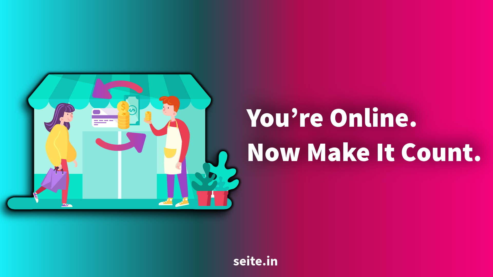

What to Do After Building Your Digital Presence: A Chennai Business Roadmap
Author : Seite Digital Marketing Team
Updated on Oct 20, 2026 | 8 mins read
Building a website, creating social media accounts, and setting up a Google Business Profile are important
steps for any small business. But what happens next?
For many businesses in Chennai, the real challenge begins after launch. A website may receive visitors
without generating enquiries. Instagram posts may get likes without bringing customers. A Google listing may
appear in search results but attract few calls.
The solution is not necessarily to spend more on advertising. It is to build a clear plan that turns online
visibility into measurable business growth.
Whether you run a boutique in T. Nagar, a restaurant in Velachery, a tuition centre in Tambaram, or a B2B
company in Ambattur, here is a practical roadmap to follow after establishing your digital presence.
1. Set Clear Business Goals Before Spending More
Your next step should be deciding what you want your online presence to achieve.
For example, a clothing store may want more WhatsApp enquiries, while a service company may want qualified
leads and consultation bookings.
Choose one or two primary goals for the next 90 days:
- Increase qualified website enquiries.
- Generate more calls through Google Search and Maps.
- Improve online sales.
- Build a relevant local audience.
- Increase repeat purchases from existing customers.
Set a measurable target, too. Instead of saying, “We need more leads,” aim to generate 30 qualified
enquiries per month and track how many become paying customers.
LinkedIn’s small business online presence guide similarly emphasizes clear goals, useful content, and
measuring results. The key lesson is simple: every digital activity should support a business objective.
2. Make Your Business Easier to Find Locally
Once your website and social profiles are ready, improve how customers discover your business.
Start with your Google Business Profile. Check that your business name, category, services, phone number,
operating hours, website link, and service area are accurate. Add genuine photos of your products, premises,
work, or team where appropriate.
Google explains that local search rankings primarily depend on relevance, distance, and prominence. Complete
information, customer reviews, and your wider online presence can help Google understand your business.
However, no business can guarantee a particular local ranking.
Read
Google's official local ranking guidance.
Next, make your website relevant to the customers you want to reach. A Chennai-based web design company,
for example, might create a dedicated service page explaining its website development services, process,
pricing factors, and project examples.
Use location keywords naturally where they help customers understand your service. Do not create dozens
of nearly identical pages for every Chennai neighbourhood.
Your goal: Help the right customer discover your business and immediately understand what you offer.
3. Turn Website Visitors Into Enquiries
Traffic alone does not grow a business. Visitors need a clear next step.
Review your website from a customer's perspective. Can someone quickly understand your service, see why
they should trust you, and contact you without confusion?
Improve these essentials:
- Clear headline: Explain what you offer and whom you help.
- Visible call to action: Add suitable options such as "Get a Quote," "Book a
Consultation,"
or "Message Us on WhatsApp."
- Trust signals: Display genuine testimonials, case studies, business details, and
relevant
work samples.
- Mobile usability: Make sure text, forms, buttons, and contact details work well on
mobile
devices.
- Fast, accessible pages: Fix broken links, confusing navigation, and major performance
issues.
Imagine a customer searching for SEO services in Chennai. They visit your website but cannot find your
service details or contact information. They may leave and choose another provider.
A simple contact form, relevant service information, and visible proof of your work can reduce that
friction.
4. Publish Content That Answers Real Customer Questions
After launching your website, do not publish content simply to keep your blog active. Focus on the questions
customers ask before making a purchase.
For example:
- How much does website development cost in Chennai?
- Is SEO or social media marketing better for a small business?
- How can a local shop attract customers online?
- What should a business check before hiring a digital marketing agency?
- How can a company generate leads without a large advertising budget?
These questions reflect different stages of buying: learning, comparing options, and preparing to contact
a provider.
Use Google Search suggestions, People Also Ask results, customer enquiries, sales conversations, and
relevant
community discussions to identify topics. Tools such as Google Search Console can help you discover the
searches already bringing people to your website.
Build connected articles around your main services. For example, a web development business could publish
articles about website costs, mobile-friendly design, website maintenance, and conversion improvements.
Link these articles to the relevant service page.
This approach supports topical relevance and helps readers move from learning to taking action.
5. Choose Social Media Platforms Based on Your Customers
You do not need to be active on every social media platform. Choose the channels that match your audience
and business goals.
A Chennai boutique may benefit from product videos and customer styling ideas on Instagram. A B2B
technology company may prioritize LinkedIn. A restaurant may use Instagram, Google Business Profile,
and WhatsApp to communicate menus, offers, and updates.
Create a manageable content schedule using four themes:
- Education: Answer common questions and share useful tips.
- Proof: Show real projects, product demonstrations, or customer feedback.
- People: Introduce your team and show behind-the-scenes work.
- Offers: Explain your services, promotions, or next steps.
Use Tamil, English, or both according to your customers' preferences. Local festivals, seasonal demand,
and Chennai-specific customer needs can make content more relevant when they genuinely connect with
your offering.
The objective is not just to increase followers. It is to build familiarity and trust with people who may
eventually become customers.
6. Build a Follow-Up System for Every Enquiry
Generating enquiries is only part of the customer journey. Businesses also need a reliable process for
handling them.
Record enquiries from your website, phone calls, WhatsApp, social media, and advertising in one organized
spreadsheet or customer relationship management (CRM) system.
Track:
- Customer name and contact details.
- Product or service requested.
- Source of the enquiry.
- Follow-up date and status.
- Whether the enquiry became a sale.
Respond promptly during business hours, provide relevant information, and follow up professionally.
For customers who are not ready to buy, offer useful information or an appropriate future follow-up
rather than sending repeated sales messages.
For example, a company selling commercial composters might receive enquiries from apartments, hotels,
schools, and factories. Recording each prospect's waste volume, purchase timeline, and requirements helps
the sales team prioritize suitable leads.
This is where digital marketing becomes a business process rather than just an online promotion activity.
7. Track Results and Improve Every Month
A strong digital presence should become more effective over time. To make that happen, measure outcomes
instead of relying only on likes, impressions, or website traffic.
Useful tools include Google Analytics for website activity, Google Search Console for search performance,
and the reporting dashboards available on your social and advertising platforms.
Monitor these metrics:
- Organic search clicks and relevant search queries.
- Calls, form submissions, and WhatsApp enquiries.
- Qualified leads and sales.
- Conversion rate from visitors to enquiries.
- Cost per qualified lead from paid campaigns.
- Repeat purchases and customer retention.
Industry statistic: An India SME Forum report based on a survey of 7,835 MSMEs during 2024–25
found that 53.8% had adopted at least one digital tool. Among the digitally active businesses surveyed,
41.4% reported a sales increase of 21–30%, while 69% reported at least 10% customer-base growth after
adopting digital solutions. These are survey findings, not guaranteed results for every business.
Source: India SME Forum, Digital Adoption Report 2025.
The takeaway is not that digital tools automatically increase sales. It is that businesses should adopt
tools that support real customer needs and measure what changes afterward.
8. A Simple 90-Day Roadmap for Chennai Businesses
Here is a practical way to organize your next three months.
-
Days 1–30: Strengthen the foundation
- Check website usability and contact options.
- Complete and verify your Google Business Profile, where eligible.
- Set up basic analytics and conversion tracking.
- Identify your main services, audiences, and business goals.
-
Days 31–60: Attract the right audience
- Publish helpful articles and service-related content.
- Improve important service pages and local search visibility.
- Share consistent social media content.
- Collect genuine customer feedback and respond to reviews.
-
Days 61–90: Improve conversions
- Review lead quality and sales outcomes.
- Identify which channels bring the most relevant enquiries.
- Improve pages or campaigns that underperform.
- Test a small paid campaign if your website and follow-up process are ready.
This roadmap is a starting point, not a fixed deadline. Competitive industries may need longer to show
meaningful SEO improvements.
Frequently Asked Questions
What should a small business do after launching a website?
Check usability, set up analytics, improve search visibility, publish helpful content, and make it easy
for visitors to enquire or purchase.
How can Chennai businesses get more customers online?
Improve local search visibility, maintain accurate business information, showcase genuine customer proof,
publish relevant content, and track which channels generate qualified enquiries.
Should a business invest in SEO or paid ads first?
SEO can build longer-term organic visibility, while paid advertising can test demand and generate traffic
more quickly. The right choice depends on your budget, competition, sales readiness, and timeline.
How long does it take to see digital marketing results?
Some paid campaigns and website improvements can produce early signals quickly. Meaningful SEO growth,
customer trust, and repeat sales usually require consistent work over time.
Final Thoughts: Turn Your Digital Presence Into Business Growth
Building your digital presence is the beginning, not the finish line. The next stage is connecting
visibility, useful content, customer trust, follow-up, and performance measurement into one repeatable
system.
For Chennai businesses, that means helping local customers find you, giving them a reason to trust you,
and making their next step simple.
At
Seite Digital Marketing, we help businesses explore digital marketing solutions across
SEO, website development, social media marketing, and paid advertising.
Visit
seite.in to explore how a
focused digital strategy can support your next stage of growth.
1. Which digital marketing services are best for a small business?
A well-kept Google Business Profile, a mobile-friendly website, local SEO,
helpful content, consistent social media, and follow-up with existing
customers are great starting points. Paid ads can come later once these
essentials are ready.
2. Why do some digital marketing efforts fail?
Digital marketing often fails because there is no clear goal, the website
cannot convert visitors into customers, or enquiries are answered too late.
A clear strategy and timely follow-up can make a big difference.
3. Where should a small business put its marketing effort?
Focus on the platforms your customers already use. For most service
businesses, Google is a great place to start, while visual businesses can
benefit from platforms like Instagram.
4. When is the right time to start paid ads?
Start paid advertising when your offer is clear and your website or
WhatsApp link makes it easy for potential customers to enquire.
This helps you make better use of your advertising budget.
5. How much should a small business spend on digital marketing?
The budget depends on your industry, competition, and business goals.
Many small businesses start with a modest monthly budget for two or three
core services and increase spending as they begin to see results.
6. How long does SEO take to show results?
SEO generally takes a few months to show noticeable results. The timeline
depends on your competition, website quality, content, and the consistency
of your SEO efforts.
7. SEO vs PPC: Which should a small business choose?
PPC can generate leads faster while your advertising budget is active,
whereas SEO builds organic visibility over time. Many small businesses
start with one approach and add the other as their needs grow.